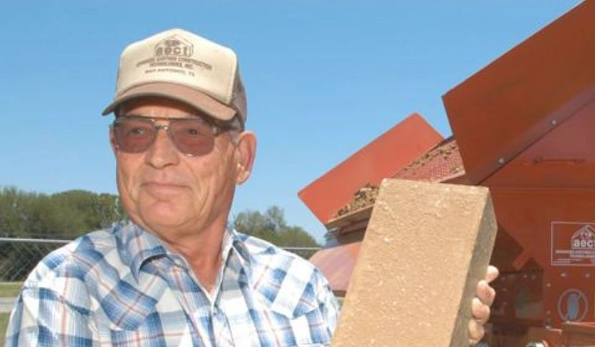

Our story
From a San Antonio garage to the world
In 1989, a small group of entrepreneurs in San Antonio set out to become the first US manufacturer of CEB machines. For 28 years, fueled by the mechanical genius of founder Lawrence Jetter, Advanced Earthen Construction Technologies built the fastest, most reliable CEB machines in the world.
In 2017, as Lawrence planned to retire and close the shop, Ryan Runge and a business partner bought AECT to carry on its legacy. Their first project: making 10,000 blocks on a 12-year-old 3500 to build AECT's new 3,200 sq ft headquarters, which is where every AECT machine is built today.
